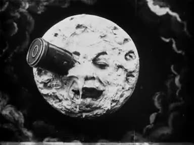

01Lock the tracking对准跟踪
Finds where the heads meant to read, line by line, and holds them there.一行一行找到磁头本该读的位置，然后稳住。
Rewind reads the signal on worn VHS, Hi8 and Betamax, locks the tracking, puts the colour back inside the edges and fills the dropouts. You get the day back, not a cleaner-looking blur. 回带读取磨旧的 VHS、Hi8 和 Betamax 信号：先把跟踪对准，再把串出去的颜色收回轮廓，最后补上掉磁的白线。还给你的是那一天，不是一团更干净的模糊。

☞ Move across the screen to turn the tracking knob. Can't find it? Press AUTO and let Rewind lock on. 在画面上左右移动，就是在拧跟踪旋钮。找不准的话，按 AUTO，交给回带去对。
NASA film of the Apollo 11 lift-off, 16 July 1969, dubbed onto a tired cassette first, then run through Rewind.1969 年 7 月 16 日阿波罗 11 号发射的 NASA 胶片，先翻录到一盘用旧了的带子上，再交给回带修。
Finds where the heads meant to read, line by line, and holds them there.一行一行找到磁头本该读的位置，然后稳住。
Untangles the colour that bled sideways and puts it back inside the edges.把横着串出去的颜色收回来，放回轮廓里面。
Where the oxide flaked off the tape, it rebuilds the line from the frames around it.磁粉剥落的地方，用前后几帧把那一行重新补出来。
Post the box, and we send it back with the tapes inside and a link on top.把箱子寄过来，我们连带子一起寄回去，最上面放一张看片的链接。
Send a tape寄一盘带子